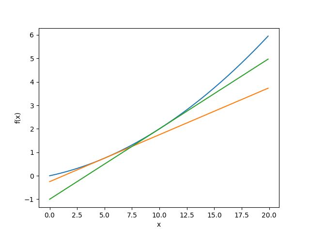

反向傳播法
Table of Contents

Backprogation的目的在於快速計算 w 與 b 的更新
1. Backward propagation
反向傳遞的目的就是利用最後的目標函數(loss/cost function)來進行參數的更新，一般來說都是用誤差均方和(mean square error)當作目標函數。如果誤差值越大，代表參數學得不好，所以需要繼續學習，直到參數或是誤差值收斂1。

Figure 1: 三層神經網路
回到圖1 \(x^{(i)}\)為第i筆輸入，其輸出值為 \[ y^{(i)}=\begin{bmatrix} y_1^{(1)} \\ y_2^{(1)} \\ \end{bmatrix}\] 而輸出值與目標的誤差為 \[ E^{(i)}=\frac{1}{2}\sum_{j=0}^m(\hat{y}_j^{(i)}-y_j^{(i)})^2 \] 目標函數為所有樣本的誤差和 \[ E=\sum_{i=0}^nE^{(i)} \] 最佳化的目的就是讓「所有樣本的誤差均方和」越小越好，所以目標是將最小化(微分方程式等於0找解)。
2. 倒遞神經網路(Back-Propagation) 數學推導
2.1. 數學推導
- 背景: 以下 a,b,c 為輸入值.並且激勵函數(activity function) 採用 sigmoid 進行說明:

Figure 2: 數學推導-1
依上圖所述，數學式如下： \[ z = aw_a + bw_b + cw_c \] \[ \delta (z) = \frac{1}{1+e^{-x}} \]
- 由於在訓練過程中目的是找到最適合的權重值(weight).可透過微分求解梯度後可以找到權重應該修正的數值.因為每個變數都需要各自進行微分,因此透過偏微分求解(在遇到非目標為分數值時,將其視為常數): \[ \frac{\vartheta z}{\vartheta w_a} = a , \frac{\vartheta z}{\vartheta w_b} = b, \frac{\vartheta z}{\vartheta w_c} = c\] \[ \delta '(z) = (1-\delta (z)) \cdot \delta (z) \]
- 得知以上各個偏微分數值後,透過連鎖律進行神經元的偏微分,可得到以下式子: \[\frac{\vartheta f}{\vartheta w_a} = \frac {\vartheta f}{\vartheta z} \cdot \frac{\vartheta z}{\vartheta w_a} = [(1-\delta (z)) \cdot \delta (z)] \cdot a\]
2.2. 數值微分
梯度法使用梯度的資料來決定學習（或找出最佳參數）的方向，此處會應用到數學的微分。微分指的是某個瞬間的變化量（如行進中的車輛瞬間速度的變化量），可以公式\eqref{org0550ba8}來定義：
\begin{equation} \label{org0550ba8} \frac{df(x)}{dx}=\lim_{h\to0}\frac{f(x+h)-f(x)}{h} \end{equation}上述公式中，等號左側\(\frac{df(x)}{dx}\)代表\(f(x)\)中對\(x\)微分，亦即，找出相對 x 之 f(x)的變化，也就是希望能找出：「隨著\(x\)的細微改變，函數\(f(x)\)會出現何種變化？」的答案，此處的\(h\)趨近於 0。 以公式\eqref{org0550ba8}實際進行 python 運算會因為 h 值太小而導致四捨五入無法計算出真實結果，如下列程式碼，若\(x=10e-50\)，其計算結果為 0。
1: def numerical_diff(f, x): 2: h = 10e - 50 3: return (f(x+h) - f(x)) /h
原因是因為\(h\)值過小而被四捨五入為 0，改善方式為將\(h\)設定為\(10^-4\)。 另一個要處理的問題是：我們想求得的是函數\(f(x)\)在點\(x\)的斜率，然而上述程式碼所計算出的是函數\(f(x)\)在\(x\)與\(x+h\)區間的斜率，改善方式是改為計算\(f(x+h)\)與\(f(x-h)\)區間的斜率，即進行數值微分（數值梯度），其程式碼如下：
1: def numerical_diff(f, x): 2: h = 1e-4 3: return (f(x+h) - f(x-h)) / (2*h)
若以上述方式，分別在\(x=5\)及\(x=10\)時對計算算式\(y=0.01x^2+0.1x\)的微分，其結果如下，橘色與綠色直線分別為\(x=5\)與\(x=10\)的切線。
1: import numpy as np 2: import matplotlib.pylab as plt 3: def numerical_diff(f, x): 4: h = 1e-4 5: return (f(x+h) - f(x-h)) / (2*h) 6: def function_1(x): 7: return 0.01*x**2 + 0.1*x 8: def tangent_line(f, x): 9: d = numerical_diff(f, x) 10: y = f(x) - d*x 11: return lambda t: d*t + y 12: x = np.arange(0.0, 20.0, 0.1) 13: y = function_1(x) 14: tf = tangent_line(function_1, 5) 15: y2 = tf(x) 16: tf2 = tangent_line(function_1, 10) 17: y3 = tf2(x) 18: plt.xlabel("x") 19: plt.ylabel("f(x)") 20: plt.plot(x, y) 21: plt.plot(x, y2) 22: plt.plot(x, y3) 23: plt.savefig("function_1.png") 24: print(numerical_diff(function_1,5)) 25: print(numerical_diff(function_1,10)) 26: #return "function_1.png"
0.1999999999990898 0.2999999999986347

Figure 3: \(f(x)=0.01x^2+0.1x\)圖表
此處計算的結果與數學解相比：\(\frac{df(x)}{dx}=0.02x+0.1\)，\(x=5\)、\(x=10\)的實際微分值應為 0.2、0.3，嚴格來說並不一致，但因誤差太小，可以視為相同。
若再進一步考慮兩個變數時的微分，如算式\eqref{orged6a98d}，這種由多個變數形成的微分，稱作偏微分，，該公式對應的 python 程式碼如下：
\begin{equation} \label{orged6a98d} \(f(x_0,x_1)=x_0^2+x_1^2\) \end{equation}1: def function_2(x): 2: return x[0]**2 + x[1]**2 3: # 或 return np.sum(x**2)
公式\(fx_0,x_1)=x_0^2+x_1^2\)的圖表如圖4所示。
1: def function_2(x): 2: return x[0]**2 + x[1]**2 3: 4: # 3Dグラフを描画 5: # cat multivariate_func_save.py 6: # coding: utf-8 7: import numpy as np 8: import matplotlib.pylab as plt 9: plt.switch_backend('agg') 10: from mpl_toolkits.mplot3d import Axes3D 11: 12: x = np.meshgrid(np.arange(-3, 3, 0.1), np.arange(-3, 3, 0.1)) 13: z = x[0]**2 + x[1]**2 14: 15: fig = plt.figure() 16: ax = Axes3D(fig) 17: ax.plot_wireframe(x[0], x[1], z) 18: 19: plt.xlim(-3.5, 3.5) 20: plt.ylim(-4.5, 4.5) 21: plt.xlabel("x0") 22: plt.ylabel("x1") 23: plt.savefig('multivariate_func.png')

Figure 4: \(f(x_0,x_1)=x_0^2+x_1^2\)圖表
6.00000000000378 7.999999999999119
上述程式碼中，function_mult1 是先將計算「將\(x_1\)固定為常數 4.0 的新函數」，對\(x_0\)進行微分；function_multi2 則是先將\(x_0\)固定為常數 3，再對\(x_1\)求出微分。
3. Godfather of Deep Learning
- 1986: the backpropagation algorithm for training multi-layer neural networks
- Hinton, G. E., Osindero, S. and Teh, Y. (2006), A fast learning algorithm for deep belief nets. Neural Computation, 18, pp. 1527-1554
- 2012: AlexNet (Alex Krizhevsky)啟動 AI/NN 電腦視覺熱潮
- 2018: Turing Prize (Yoshua Bengio and Yann LeCun)